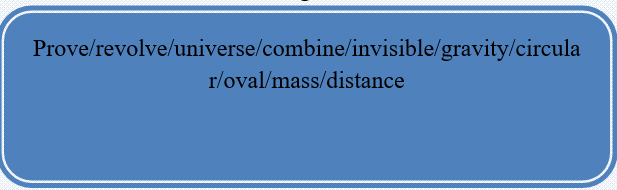

Isaac Newton was born in 1642 in England. His father had died two months before his birth. When Isaac was three his mother remarried, and Isaac remained with his grandmother. He was not interested in the family farm, so he was sent to Cambridge University to study.
Isaac was born just a short time after the death of Galileo, one of the greatest scientists of all time. Galileo had proved that the planets revolve around the sun, not the earth as people thought at the time. Isaac Newton was very interested in the discoveries of Galileo and others. Isaac thought the universe worked like a machine and that a few simple laws governed it. Like Galileo, he realized that mathematics was the way to explain and prove those laws. Isaac Newton was one of the world’s great scientists because he took his ideas, and the ideas of earlier scientists, and combined them into a unified picture of how the universe works.
Isaac Newton’s calculations changed the way people understood the universe. No one had been able to explain why the planets stayed in their orbits. What held them up? Less than 50 years before Isaac Newton was born it was thought that the planets were held in place by an invisible shield. Isaac proved that they were held in place by the sun’s gravity. He also showed that the force of gravity was affected by distance and by mass. He was not the first to understand that the orbit of a planet was not circular, but more elongated, like an oval. What he did was to explain how it worked.
Task1 Reading
🔸Read the text and answer the questions.
🔸When and where was Newton born?
🔸When did his father die?
🔸Why did Isaac remain with his grandfather?
🔸Who proved that the planets revolve around the sun?
🔸What affected the force of gravity?
🔸What shape was the orbit of a planet, as he understood?
Task2 Vocabulary
Find the definitions for the words given.

Task3 Fill the sentences with the information from the text.
🔸Isaac Newton was born in 1642 in………………………………………….
🔸He was not interested in the family farm, so he………………………………
🔸Isaac was born just a short time after the death of……………………………
🔸Galileo had proved that the planets revolve………………………………….
🔸Isaac thought the universe worked like………………………………………
🔸Isaac Newton’s calculations changed the way people understood……………
🔸Isaac proved that they were held in place by…………………………………
🔸He also showed that the force of gravity was affected by…………………….
Task4 Listening
Listen to the conversation. Are the sentences True(T) or False(F)?
1. The man’s room is hot. _____
2. The air conditioning is broken. ____
3. The switch is near the bed. _____
4. The room has got a dirty bed. ____
5. The man can go to room 108. ____